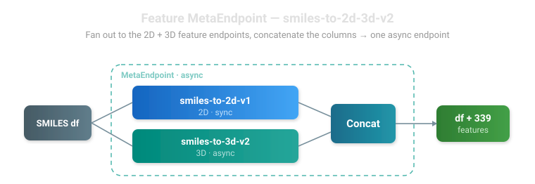
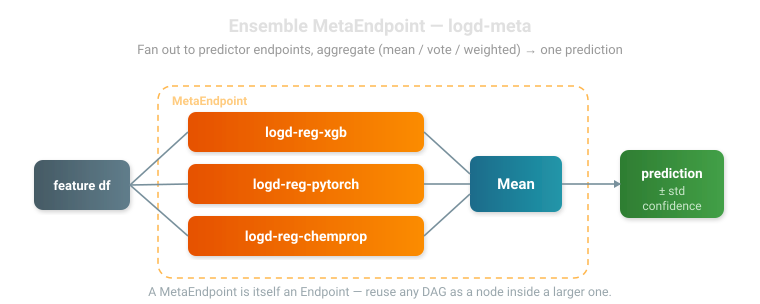

A MetaEndpoint is a deployed Endpoint backed by a directed acyclic graph (DAG) of other endpoints + aggregation nodes. From the caller's perspective it's just an Endpoint — endpoint.inference(df) returns a DataFrame. The DAG machinery is server-side.
MetaEndpoint lets you compose multiple deployed endpoints into a single inference target. Two canonical shapes:
Feature pipelines — fan out to several feature endpoints in parallel, merge the columns, optionally feed a predictor.
Ensembles — fan out to several predictor endpoints, aggregate their predictions (mean, weighted mean, vote, calibrated confidence weighting, …) into a single output.
The same DAG abstraction covers both.
Every endpoint is a df-in → df-out unit, so the same DAG abstraction expresses both canonical shapes. A feature pipeline fans out to feature endpoints and concatenates their columns:

Feature pipeline — fan out to the 2D + 3D endpoints, Concat the columns. One async endpoint, ~387 features.
An ensemble fans out to predictor endpoints and aggregates their predictions (mean, vote, weighted, calibrated confidence) into one output:

Ensemble — fan out to predictor endpoints, aggregate into one prediction. A MetaEndpoint is itself an endpoint, so DAGs nest arbitrarily.
Featured: smiles-to-2d-3d-v1 (2D + 3D in one call)
One endpoint, ~387 features
smiles-to-2d-3d-v1 is a deployed MetaEndpoint that fans out to the 2D descriptor endpoint and the 3D descriptor endpoint in parallel and concatenates the results — ~313 RDKit/Mordred 2D features + 74 GFN2-xTB Boltzmann 3D features, merged per molecule. Callers just do endpoint.inference(df); the fan-out and merge happen server-side.
Our flagship feature MetaEndpoint combines the 2D and 3D descriptor endpoints into a single inference target. Because one of its children (smiles-to-3d-full-v1) is async, the whole MetaEndpoint is automatically deployed async (see Async Auto-Detection) — so a single call returns the complete 2D + 3D feature set without the caller juggling two endpoints or two invocation modes.
importpandasaspdfromworkbench.apiimportMetaEndpoint# Use the deployed endpoint like any other — fan-out + merge is server-sideend=MetaEndpoint("smiles-to-2d-3d-v1")df=pd.DataFrame({"smiles":["CCO","c1ccccc1"]})result=end.inference(df)# result = input columns + ~313 2D feature columns + 74 3D feature columns
It is built from this DAG (see feature_endpoints/smiles_to_2d_3d_v1.py for the deploy script):
fromworkbench.apiimportMetaEndpointfromworkbench.utils.meta_endpoint_dagimportMetaEndpointDAGfromworkbench.utils.aggregation_nodesimportConcatdag=MetaEndpointDAG()dag.add_endpoint("smiles-to-2d-v1")# sync, RDKit + Mordred 2Ddag.add_endpoint("smiles-to-3d-full-v1")# async, GFN2-xTB Boltzmann 3Ddag.add_aggregation(Concat(name="combine"))dag.add_edge("smiles-to-2d-v1","combine")dag.add_edge("smiles-to-3d-full-v1","combine")dag.set_input_node("smiles-to-2d-v1","smiles-to-3d-full-v1")dag.set_output_node("combine")end=MetaEndpoint.create(name="smiles-to-2d-3d-v1",dag=dag,description="SMILES → RDKit/Mordred 2D + Boltzmann 3D molecular descriptors",tags=["meta","features"],min_instances=0,# scale to zero when idlemax_instances=1,)
Quick Start: Ensemble
Combine three predictor endpoints (XGBoost + PyTorch + ChemProp) into one ensemble:
The output has the standard prediction / prediction_std (ensemble disagreement) / confidence columns alongside whatever pass-through columns the input had.
Async Auto-Detection
If any child endpoint in the DAG is deployed as async (e.g. smiles-to-3d-full-v1), the MetaEndpoint is automatically deployed as async too — its 60-minute invocation budget needs to accommodate the slowest child. You don't specify this; MetaEndpoint.create() detects it via dag.has_async_endpoint() and chooses the deploy mode. This is exactly why smiles-to-2d-3d-v1 above is async: its sync 2D child and async 3D child are composed transparently, and the container dispatches each to fast_inference (sync) or async_inference (async) as appropriate.
DAG Building Blocks
Endpoint nodes
Every endpoint node refers to a deployed Workbench endpoint by name. Endpoint nodes can be:
Input nodes — receive the caller's input DataFrame directly. Declared with dag.set_input_node(...).
Downstream endpoint nodes — take their input from a single upstream parent (e.g. a Concat aggregation feeding a predictor).
dag.add_endpoint("smiles-to-2d-v1")# node name = endpoint name (default)dag.add_endpoint("smiles-to-2d-v1",node_name="left_2d")# explicit node name (for aliasing)
Aggregation nodes
Class
Use case
Output
Concat
Column-union of feature outputs from parallel branches
dag.add_edge("smiles-to-2d-v1","combine")# 2D output flows into combinedag.add_edge("combine","predictor")# combined features flow into predictor
Endpoint nodes accept at most one inbound edge (one source for their input DataFrame). Aggregation nodes can have any number of inbound edges.
Validation
Call dag.validate() to fail loud on misconfiguration before any inference round-trips. Checks include cycle detection, dangling endpoint nodes, and reachability from input to output.
Row Alignment
The walker injects a synthetic __dag_row_id column at the start of every run() and strips it before returning. Aggregation nodes use it as the join key so callers do not need to supply any id column on their input data — and any id-like column they do supply just flows through as a regular pass-through column.
This gives MetaEndpoints a clean contract: any DataFrame with the columns your input-node endpoints expect is a valid input.
How It Works
Creation flow
When you call MetaEndpoint.create(name, dag, ...):
Validate — dag.validate() fails loud on cycles, dangling nodes, etc.
Resolve async flags — looks up each child's workbench_meta to record per-endpoint async status.
Lineage anchor — backtraces the first input endpoint to a FeatureSet/target/feature_list (Workbench Models need to point at a FeatureSet).
Build + register the Model — runs the standard FeatureSet.to_model() flow, passing the DAG dict + region + bucket as custom_args. The meta_endpoint.template substitutes those placeholders, the SageMaker training job persists meta_endpoint_config.json as the model artifact, and the model package is registered with the standard inference image.
Deploy — model.to_endpoint(...) deploys an Endpoint, async if any child is async (with max_instances=1 and 5-minute idle drain). inference_batch_size is auto-set to the minimum across DAG children.
Inference flow
When the deployed MetaEndpoint receives a request:
The container deserializes the DAG from the model artifact.
The walker traverses nodes in topological order.
Endpoint nodes call fast_inference (sync child) or async_inference (async child) via workbench.endpoints — the transport is decided per child by the async flags captured at deploy time.
Aggregation nodes apply their combination logic on the upstream outputs.
The output node's DataFrame is returned to the caller (with the synthetic __dag_row_id stripped).
Failure policy is fail-fast: any exception in any node propagates out and the request fails. (Future: per-node failure policies for partial-result aggregation.)
CLI: Ensemble Simulator
Before committing to an ensemble shape, the ensemble_sim CLI lets you evaluate aggregation strategies offline against captured cross-fold predictions:
This reports per-strategy MAE / RMSE / R² so you can pick the aggregation node that performs best before building the DAG. The same simulator will also be wired into MetaEndpoint.create() for auto-tuning when a DAG includes a strategy-tunable aggregation node (planned).
API Reference
MetaEndpoint: An Endpoint backed by a directed acyclic graph (DAG) of
child endpoints and aggregation nodes.
A MetaEndpoint behaves identically to a regular Endpoint at runtime —
callers do endpoint.inference(df) and get a DataFrame back. The DAG
machinery is server-side: the deployed container loads the serialized
DAG, dispatches each child invocation to fast_inference (sync) or
async_inference (async), and runs aggregation nodes locally.
Common usage::
from workbench.api import MetaEndpoint
from workbench.utils.meta_endpoint_dag import MetaEndpointDAG
from workbench.utils.aggregation_nodes import Concat
dag = MetaEndpointDAG()
dag.add_endpoint("smiles-to-2d-v1")
dag.add_endpoint("smiles-to-3d-fast-v1")
dag.add_aggregation(Concat(name="combine"))
dag.add_edge("smiles-to-2d-v1", "combine")
dag.add_edge("smiles-to-3d-fast-v1", "combine")
dag.set_input_node("smiles-to-2d-v1", "smiles-to-3d-fast-v1")
dag.set_output_node("combine")
end = MetaEndpoint.create(name="my-features-meta", dag=dag)
# Input does not need any id column — the DAG handles row alignment internally.
df = end.inference(input_df)
If any child endpoint in the DAG is async (e.g. smiles-to-3d-full-v1),
the MetaEndpoint is automatically deployed as async too — its invocation
budget needs to accommodate the slowest child.
classMetaEndpoint(Endpoint):"""Endpoint backed by a :class:`MetaEndpointDAG`. Constructor wraps an existing deployed MetaEndpoint by name, identical to :class:`Endpoint`. Use :meth:`create` to build and deploy a new one from a DAG. """@classmethoddefcreate(cls,name:str,dag:MetaEndpointDAG,description:str|None=None,tags:list[str]|None=None,min_instances:int=0,max_instances:int=1,)->"MetaEndpoint":"""Build, register, and deploy a MetaEndpoint from a DAG. Steps: 1. Validate the DAG; populate per-endpoint async flags. 2. Backtrace lineage from a primary endpoint to satisfy Workbench's Model machinery (FeatureSet, target, features). 3. Run the standard ``FeatureSet.to_model()`` flow, passing the DAG / region / bucket as ``custom_args`` so the meta-endpoint template fills them in at training time. 4. Deploy the endpoint (async if any DAG child is async) and stash the serialized DAG on it. Args: name: Endpoint / Model name. dag: A :class:`MetaEndpointDAG` describing the data flow. description: Optional description for the registered model. tags: Optional list of Workbench tags. min_instances: Autoscaler floor for async deployments (default: 0 — scale to zero when idle). Set to 1 in production to keep the meta warm. Ignored for sync deployments. max_instances: Autoscaler ceiling for async deployments (default: 1). The meta is a thin orchestrator that fans out to children, so it rarely needs more than one instance. Ignored for sync deployments. Returns: The deployed MetaEndpoint, ready for ``.inference()``. """ifnotArtifact.is_name_valid(name,delimiter="-",lower_case=False):raiseValueError(f"Invalid MetaEndpoint name: '{name}' (use only alphanumerics and '-')")log.important(f"Validating DAG for MetaEndpoint '{name}'...")dag.validate()dag.populate_async_flags()is_async=dag.has_async_endpoint()log.important(f"DAG: {len(dag.endpoints)} endpoints, {len(dag.aggregations)} aggregation nodes "f"({'async'ifis_asyncelse'sync'} deployment)")# Backtrace lineage from a primary endpoint to satisfy Workbench Model# machinery (every Model needs a FeatureSet to hang off of).feature_list,feature_set_name,target_column=cls._derive_lineage(dag)# Build the model via the standard FeatureSet → Model flow. The# meta-endpoint template's `{{dag}}`, `{{aws_region}}`, `{{s3_bucket}}`# placeholders are filled from custom_args.aws_clamp=AWSAccountClamp()sm_session=aws_clamp.sagemaker_session()workbench_bucket=ConfigManager().get_config("WORKBENCH_BUCKET")feature_set=FeatureSet(feature_set_name)feature_set.to_model(name=name,model_type=cls._derive_model_type(dag),model_framework=ModelFramework.META,tags=tagsor[name],description=descriptionorf"MetaEndpoint DAG over: {', '.join(dag.endpoints.values())}",target_column=target_column,feature_list=feature_list,custom_args={"dag":dag.to_dict(),"aws_region":sm_session.boto_region_name,"s3_bucket":workbench_bucket,},)# MetaEndpoint containers are thin orchestrators — they receive the# full input as one invocation and let each child's own async_inference# do the row-level fan-out against the child fleet.log.important(f"Deploying MetaEndpoint '{name}' ({'async'ifis_asyncelse'sync'})...")model=Model(name)endpoint=model.to_endpoint(tags=tagsor[name],async_endpoint=is_async,min_instances=min_instancesifis_asyncelse0,max_instances=max_instancesifis_asyncelseNone,)# The meta delegates row-level batching to its children, who saturate# their own fleets; size the meta batch so one invocation finishes well# under SageMaker async's 60-minute cap. Async children can be slow per# row (e.g. GFN2-xTB 3D descriptors), so async metas use a smaller batch:# with an 8-worker child fleet at batch_size 5, 200 rows is a 40-job# queue the workers drain in a few rounds. All-sync metas stay large# (rows are cheap, so a single big invocation is fine).endpoint.upsert_workbench_meta({"inference_batch_size":200ifis_asyncelse500,"meta_endpoint_dag":dag.to_dict(),})log.important(f"MetaEndpoint '{name}' created successfully!")returncls(name)# ------------------------------------------------------------------# Internal helpers# ------------------------------------------------------------------@classmethoddef_derive_model_type(cls,dag:MetaEndpointDAG)->ModelType:"""Pick the most accurate :class:`ModelType` for the DAG's output. - Output node is a terminal endpoint → borrow that endpoint's declared type (e.g., a downstream predictor endpoint contributes its own type). - Output node is :class:`~workbench.utils.aggregation_nodes.Concat` → ``TRANSFORMER`` (column-union of feature outputs). - Output node is :class:`~workbench.utils.aggregation_nodes.Vote` → ``CLASSIFIER`` (majority vote of class labels). - Output node is any other prediction aggregator → ``REGRESSOR``. """fromworkbench.utils.aggregation_nodesimportConcat,Voteoutput_name=dag.output_nodeifoutput_nameindag.endpoints:returnModel(dag.endpoints[output_name]).model_typeagg=dag.aggregations[output_name]ifisinstance(agg,Concat):returnModelType.TRANSFORMERifisinstance(agg,Vote):returnModelType.CLASSIFIERreturnModelType.REGRESSOR@classmethoddef_derive_lineage(cls,dag:MetaEndpointDAG)->tuple[list[str],str,str|None]:"""Derive a (feature_list, feature_set_name, target_column) tuple for the meta. Workbench Models need to trace back to a FeatureSet, and downstream tooling (``test_inference``, ``register_input_columns`` / ``register_output_columns``) all anchor on ``model.features()`` + ``model.get_input()``. For DAG-based MetaEndpoints we satisfy that contract by: - ``feature_list`` / ``feature_set_name`` — borrowed from the first input endpoint, since the meta consumes that endpoint's input columns and that endpoint's FeatureSet is guaranteed to contain usable smoke-test data. - ``target_column`` — :meth:`MetaEndpointDAG.terminal_target`, which walks back from the output node to the closest predictor endpoint(s) so mixed DAGs (smiles → features → predictor) report what the meta actually predicts, not what the input endpoint happens to produce. """ifnotdag.input_nodes:raiseValueError("DAG has no input nodes — cannot derive lineage")primary_endpoint_name=dag.endpoints[dag.input_nodes[0]]ep=Endpoint(primary_endpoint_name)ifnotep.exists():raiseValueError(f"Primary endpoint '{primary_endpoint_name}' does not exist")primary_model=Model(ep.get_input())feature_list=primary_model.features()orlist(dag.input_columns())feature_set_name=primary_model.get_input()# Target reflects what the DAG ultimately predicts (walks back from# the output node), not what the input endpoint happens to produce.# For mixed DAGs (smiles → features → predictor), this surfaces the# downstream predictor's target instead of the feature endpoint's None.target_column=dag.terminal_target()log.info(f"Lineage anchor: {primary_endpoint_name} -> {primary_model.name} -> {feature_set_name} "f"(target: {target_column})")returnfeature_list,feature_set_name,target_columndefget_dag(self)->MetaEndpointDAG:"""Reconstruct the MetaEndpointDAG from this endpoint's stored metadata."""meta=self.workbench_meta()or{}dag_dict=meta.get("meta_endpoint_dag")ifnotdag_dict:raiseValueError(f"MetaEndpoint '{self.name}' has no DAG in workbench_meta. Recreate via MetaEndpoint.create().")returnMetaEndpointDAG.from_dict(dag_dict)defrun_dag_test(self,input_df:pd.DataFrame)->pd.DataFrame:"""Execute the DAG client-side against ``input_df``. Bypasses the deployed meta endpoint entirely: each child endpoint is invoked directly via the regular ``Endpoint(name).inference()`` API from this process. Useful for debugging the DAG topology, isolating which child is misbehaving, or running the DAG when the deployed meta endpoint is unavailable. Result is identical to ``self.inference(input_df)`` modulo transport and any container-only side effects (data capture, etc.). """returnself.get_dag().run(input_df)defpurge_async_queue(self)->int:"""Cancel queued async invocations for the meta and every async child. When a meta-level batch job is killed, orphaned work can be sitting at two layers: invocations queued at the meta endpoint, and child invocations queued by in-flight meta predict_fns. This override purges both so the entire DAG drains. Returns: int: Total number of staged input objects deleted across the meta and its async children. """total=super().purge_async_queue()dag=self.get_dag()forchild_nameinset(dag.endpoints.values()):ifdag.endpoint_async_flags.get(child_name):total+=Endpoint(child_name).purge_async_queue()returntotal
Build, register, and deploy a MetaEndpoint from a DAG.
Steps
Validate the DAG; populate per-endpoint async flags.
Backtrace lineage from a primary endpoint to satisfy
Workbench's Model machinery (FeatureSet, target, features).
Run the standard FeatureSet.to_model() flow, passing the
DAG / region / bucket as custom_args so the meta-endpoint
template fills them in at training time.
Deploy the endpoint (async if any DAG child is async) and
stash the serialized DAG on it.
A :class:MetaEndpointDAG describing the data flow.
required
description
str | None
Optional description for the registered model.
None
tags
list[str] | None
Optional list of Workbench tags.
None
min_instances
int
Autoscaler floor for async deployments (default: 0 —
scale to zero when idle). Set to 1 in production to keep the
meta warm. Ignored for sync deployments.
0
max_instances
int
Autoscaler ceiling for async deployments (default: 1).
The meta is a thin orchestrator that fans out to children, so
it rarely needs more than one instance. Ignored for sync
deployments.
1
Returns:
Type
Description
'MetaEndpoint'
The deployed MetaEndpoint, ready for .inference().
@classmethoddefcreate(cls,name:str,dag:MetaEndpointDAG,description:str|None=None,tags:list[str]|None=None,min_instances:int=0,max_instances:int=1,)->"MetaEndpoint":"""Build, register, and deploy a MetaEndpoint from a DAG. Steps: 1. Validate the DAG; populate per-endpoint async flags. 2. Backtrace lineage from a primary endpoint to satisfy Workbench's Model machinery (FeatureSet, target, features). 3. Run the standard ``FeatureSet.to_model()`` flow, passing the DAG / region / bucket as ``custom_args`` so the meta-endpoint template fills them in at training time. 4. Deploy the endpoint (async if any DAG child is async) and stash the serialized DAG on it. Args: name: Endpoint / Model name. dag: A :class:`MetaEndpointDAG` describing the data flow. description: Optional description for the registered model. tags: Optional list of Workbench tags. min_instances: Autoscaler floor for async deployments (default: 0 — scale to zero when idle). Set to 1 in production to keep the meta warm. Ignored for sync deployments. max_instances: Autoscaler ceiling for async deployments (default: 1). The meta is a thin orchestrator that fans out to children, so it rarely needs more than one instance. Ignored for sync deployments. Returns: The deployed MetaEndpoint, ready for ``.inference()``. """ifnotArtifact.is_name_valid(name,delimiter="-",lower_case=False):raiseValueError(f"Invalid MetaEndpoint name: '{name}' (use only alphanumerics and '-')")log.important(f"Validating DAG for MetaEndpoint '{name}'...")dag.validate()dag.populate_async_flags()is_async=dag.has_async_endpoint()log.important(f"DAG: {len(dag.endpoints)} endpoints, {len(dag.aggregations)} aggregation nodes "f"({'async'ifis_asyncelse'sync'} deployment)")# Backtrace lineage from a primary endpoint to satisfy Workbench Model# machinery (every Model needs a FeatureSet to hang off of).feature_list,feature_set_name,target_column=cls._derive_lineage(dag)# Build the model via the standard FeatureSet → Model flow. The# meta-endpoint template's `{{dag}}`, `{{aws_region}}`, `{{s3_bucket}}`# placeholders are filled from custom_args.aws_clamp=AWSAccountClamp()sm_session=aws_clamp.sagemaker_session()workbench_bucket=ConfigManager().get_config("WORKBENCH_BUCKET")feature_set=FeatureSet(feature_set_name)feature_set.to_model(name=name,model_type=cls._derive_model_type(dag),model_framework=ModelFramework.META,tags=tagsor[name],description=descriptionorf"MetaEndpoint DAG over: {', '.join(dag.endpoints.values())}",target_column=target_column,feature_list=feature_list,custom_args={"dag":dag.to_dict(),"aws_region":sm_session.boto_region_name,"s3_bucket":workbench_bucket,},)# MetaEndpoint containers are thin orchestrators — they receive the# full input as one invocation and let each child's own async_inference# do the row-level fan-out against the child fleet.log.important(f"Deploying MetaEndpoint '{name}' ({'async'ifis_asyncelse'sync'})...")model=Model(name)endpoint=model.to_endpoint(tags=tagsor[name],async_endpoint=is_async,min_instances=min_instancesifis_asyncelse0,max_instances=max_instancesifis_asyncelseNone,)# The meta delegates row-level batching to its children, who saturate# their own fleets; size the meta batch so one invocation finishes well# under SageMaker async's 60-minute cap. Async children can be slow per# row (e.g. GFN2-xTB 3D descriptors), so async metas use a smaller batch:# with an 8-worker child fleet at batch_size 5, 200 rows is a 40-job# queue the workers drain in a few rounds. All-sync metas stay large# (rows are cheap, so a single big invocation is fine).endpoint.upsert_workbench_meta({"inference_batch_size":200ifis_asyncelse500,"meta_endpoint_dag":dag.to_dict(),})log.important(f"MetaEndpoint '{name}' created successfully!")returncls(name)
get_dag()
Reconstruct the MetaEndpointDAG from this endpoint's stored metadata.
defget_dag(self)->MetaEndpointDAG:"""Reconstruct the MetaEndpointDAG from this endpoint's stored metadata."""meta=self.workbench_meta()or{}dag_dict=meta.get("meta_endpoint_dag")ifnotdag_dict:raiseValueError(f"MetaEndpoint '{self.name}' has no DAG in workbench_meta. Recreate via MetaEndpoint.create().")returnMetaEndpointDAG.from_dict(dag_dict)
purge_async_queue()
Cancel queued async invocations for the meta and every async child.
When a meta-level batch job is killed, orphaned work can be sitting
at two layers: invocations queued at the meta endpoint, and child
invocations queued by in-flight meta predict_fns. This override
purges both so the entire DAG drains.
Returns:
Name
Type
Description
int
int
Total number of staged input objects deleted across the
defpurge_async_queue(self)->int:"""Cancel queued async invocations for the meta and every async child. When a meta-level batch job is killed, orphaned work can be sitting at two layers: invocations queued at the meta endpoint, and child invocations queued by in-flight meta predict_fns. This override purges both so the entire DAG drains. Returns: int: Total number of staged input objects deleted across the meta and its async children. """total=super().purge_async_queue()dag=self.get_dag()forchild_nameinset(dag.endpoints.values()):ifdag.endpoint_async_flags.get(child_name):total+=Endpoint(child_name).purge_async_queue()returntotal
run_dag_test(input_df)
Execute the DAG client-side against input_df.
Bypasses the deployed meta endpoint entirely: each child endpoint is
invoked directly via the regular Endpoint(name).inference() API
from this process. Useful for debugging the DAG topology, isolating
which child is misbehaving, or running the DAG when the deployed
meta endpoint is unavailable.
Result is identical to self.inference(input_df) modulo transport
and any container-only side effects (data capture, etc.).
defrun_dag_test(self,input_df:pd.DataFrame)->pd.DataFrame:"""Execute the DAG client-side against ``input_df``. Bypasses the deployed meta endpoint entirely: each child endpoint is invoked directly via the regular ``Endpoint(name).inference()`` API from this process. Useful for debugging the DAG topology, isolating which child is misbehaving, or running the DAG when the deployed meta endpoint is unavailable. Result is identical to ``self.inference(input_df)`` modulo transport and any container-only side effects (data capture, etc.). """returnself.get_dag().run(input_df)
MetaEndpointDAG — a directed acyclic graph of endpoints and
aggregation nodes describing an inference-time data flow.
A DAG has two kinds of nodes:
Endpoint nodes — references to deployed Workbench Endpoint
instances by name. The DAG defers actual Endpoint instantiation
until execution / column-contract resolution.
Aggregation nodes — instances of :class:AggregationNode subclasses
that combine outputs from upstream nodes.
Row-alignment across parallel branches: the walker injects a synthetic
:data:DAG_ROW_ID column at the start of every run() and strips it
before returning. Aggregation nodes use it as the join key, so callers
do not need to supply (or care about) any id column on their input data.
Validation runs at construction time so misconfigured DAGs fail loud
before any inference round-trips.
MetaEndpointDAG
A typed DAG of endpoints + aggregation nodes.
The DAG joins parallel branches using an internal synthetic row id
(:data:DAG_ROW_ID) injected by :meth:run — callers don't need to
supply any id column on their input.
Source code in src/workbench/utils/meta_endpoint_dag.py
classMetaEndpointDAG:"""A typed DAG of endpoints + aggregation nodes. The DAG joins parallel branches using an internal synthetic row id (:data:`DAG_ROW_ID`) injected by :meth:`run` — callers don't need to supply any id column on their input. """def__init__(self):self._endpoints:Dict[str,str]={}# node_name → endpoint_nameself._endpoint_async_flags:Dict[str,bool]={}# populated by populate_async_flags()self._aggregations:Dict[str,AggregationNode]={}self._edges:List[tuple[str,str]]=[]# (from_node, to_node)self._input_nodes:List[str]=[]self._output_node:Optional[str]=None# ------------------------------------------------------------------# Construction# ------------------------------------------------------------------defadd_endpoint(self,endpoint_name:str,node_name:Optional[str]=None)->str:"""Add an endpoint reference to the DAG. Args: endpoint_name: Name of a deployed Workbench endpoint. node_name: Optional unique node name (defaults to ``endpoint_name``). Returns: The node name (so callers can chain). """node=node_nameorendpoint_nameifnodeinself._endpointsornodeinself._aggregations:raiseValueError(f"Node '{node}' already exists in this DAG")self._endpoints[node]=endpoint_namereturnnodedefadd_aggregation(self,node:AggregationNode)->str:"""Add an :class:`AggregationNode` to the DAG. The node's ``name`` must be unique across the DAG. """ifnode.nameinself._endpointsornode.nameinself._aggregations:raiseValueError(f"Node '{node.name}' already exists in this DAG")self._aggregations[node.name]=nodereturnnode.namedefadd_edge(self,from_node:str,to_node:str)->None:"""Declare data flow from ``from_node`` to ``to_node``. Endpoint nodes accept at most one inbound edge (their input DataFrame comes from a single upstream producer). Aggregation nodes can have any number of inbound edges. """iffrom_nodenotinself._all_nodes():raiseValueError(f"Edge from unknown node '{from_node}'")ifto_nodenotinself._all_nodes():raiseValueError(f"Edge to unknown node '{to_node}'")ifto_nodeinself._endpointsandself._parents_of(to_node):raiseValueError(f"Endpoint node '{to_node}' already has an upstream parent "f"('{self._parents_of(to_node)[0]}'); endpoints take input "f"from at most one source.")self._edges.append((from_node,to_node))defset_input_node(self,*nodes:str)->None:"""Declare which nodes receive the DAG's input DataFrame directly."""forninnodes:ifnnotinself._endpoints:raiseValueError(f"Input nodes must be endpoint nodes; '{n}' is not")self._input_nodes=list(nodes)defset_output_node(self,node:str)->None:"""Declare the terminal node whose output is the DAG's output."""ifnodenotinself._all_nodes():raiseValueError(f"Unknown output node '{node}'")self._output_node=node# ------------------------------------------------------------------# Inspection# ------------------------------------------------------------------@propertydefendpoints(self)->Dict[str,str]:"""Mapping of node_name → endpoint_name (read-only view)."""returnself._endpoints@propertydefaggregations(self)->Dict[str,AggregationNode]:"""Mapping of node_name → :class:`AggregationNode` (read-only view)."""returnself._aggregations@propertydefinput_nodes(self)->List[str]:"""Node names that receive the DAG's input DataFrame directly (read-only)."""returnself._input_nodes@propertydefoutput_node(self)->Optional[str]:"""Node name whose output is the DAG's output."""returnself._output_node@propertydefendpoint_async_flags(self)->Dict[str,bool]:"""Mapping of endpoint_name → is_async (populated by :meth:`populate_async_flags`)."""returnself._endpoint_async_flagsdef_all_nodes(self)->List[str]:returnlist(self._endpoints.keys())+list(self._aggregations.keys())def_parents_of(self,node:str)->List[str]:return[srcforsrc,dstinself._edgesifdst==node]deftopological_order(self)->List[str]:"""Return nodes in topological order (parents before children). Raises: ValueError: If the DAG contains a cycle. """in_degree={n:0forninself._all_nodes()}for_,dstinself._edges:in_degree[dst]+=1ready=[nforn,deginin_degree.items()ifdeg==0]order:List[str]=[]whileready:node=ready.pop(0)order.append(node)forsrc,dstinself._edges:ifsrc==node:in_degree[dst]-=1ifin_degree[dst]==0:ready.append(dst)iflen(order)!=len(in_degree):raiseValueError("DAG contains a cycle")returnorder# ------------------------------------------------------------------# Column contract# ------------------------------------------------------------------definput_columns(self)->List[str]:"""Union of input columns required by every node that receives the caller's input directly. Used by :class:`MetaEndpoint` as a fallback when deriving the feature list during lineage anchoring. """fromworkbench.apiimportEndpointifnotself._input_nodes:raiseValueError("DAG has no input nodes — call set_input_node() first")seen=set()cols:List[str]=[]fornodeinself._input_nodes:forcinEndpoint(self._endpoints[node]).input_columns():ifcnotinseen:seen.add(c)cols.append(c)returncols# ------------------------------------------------------------------# Validation# ------------------------------------------------------------------defvalidate(self)->"MetaEndpointDAG":"""Validate the DAG. Returns self for chaining; raises on failure. Checks: - At least one input node and exactly one output node declared - No cycles - Aggregation nodes have at least one parent - Endpoint nodes are either input nodes (zero parents) or have exactly one upstream parent — never both - The output node is reachable from the input nodes """ifnotself._input_nodes:raiseValueError("DAG has no input nodes")ifself._output_nodeisNone:raiseValueError("DAG has no output node")order=self.topological_order()# raises on cycleforep_nodeinself._endpoints:parents=self._parents_of(ep_node)is_input=ep_nodeinself._input_nodesifis_inputandparents:raiseValueError(f"Endpoint node '{ep_node}' is declared as an input node but has "f"upstream parents {parents}; pick one or the other.")ifnotis_inputandnotparents:raiseValueError(f"Endpoint node '{ep_node}' has no upstream parent and is not "f"declared as an input node — it has no source for its input DataFrame.")fornameinself._aggregations:ifnotself._parents_of(name):raiseValueError(f"Aggregation node '{name}' has no upstream parents")reachable=set(self._input_nodes)fornodeinorder:ifnodeinreachable:forsrc,dstinself._edges:ifsrc==node:reachable.add(dst)ifself._output_nodenotinreachable:raiseValueError(f"Output node '{self._output_node}' is not reachable from input nodes {self._input_nodes}")returnself# ------------------------------------------------------------------# Execution (client-side walker)# ------------------------------------------------------------------defrun(self,input_df:pd.DataFrame,endpoint_invoker:Optional[EndpointInvoker]=None,)->pd.DataFrame:"""Execute the DAG against ``input_df`` and return the output node's DataFrame. The walker injects a synthetic :data:`DAG_ROW_ID` column at entry (used internally to align rows across parallel branches) and strips it before returning. Callers don't need to supply any id column. Walks nodes in topological order. Endpoint nodes call :meth:`Endpoint.inference` on either the caller's ``input_df`` (input nodes) or their upstream parent's cached output. Aggregation nodes receive the cached outputs of all their parents and apply their combination logic. Failure policy is fail-fast: any exception in any node propagates out and the DAG run aborts. Args: input_df: DataFrame supplied by the caller. Must contain the columns required by every input-node endpoint. No id column is required. endpoint_invoker: Optional callable ``(endpoint_name, df) -> df`` used to invoke endpoint nodes. Defaults to using the full Workbench ``Endpoint`` API class — appropriate for client-side use. Pass a ``fast_inference``-backed invoker when running inside a deployed SageMaker container where the full Workbench config isn't available. Returns: The DataFrame at the DAG's output node, with the synthetic :data:`DAG_ROW_ID` column removed. """ifself._output_nodeisNone:raiseValueError("DAG has no output node — call set_output_node() first")ifDAG_ROW_IDininput_df.columns:raiseValueError(f"input_df already contains the reserved column '{DAG_ROW_ID}'. "f"Remove it before calling run().")# Inject the synthetic row id. Endpoints will pass this through as an# unknown input column; aggregation nodes use it as their join key.input_df=input_df.copy()input_df[DAG_ROW_ID]=range(len(input_df))outputs:Dict[str,pd.DataFrame]={}fornodeinself.topological_order():ifnodeinself._endpoints:outputs[node]=self._run_endpoint(node,input_df,outputs,endpoint_invoker)else:outputs[node]=self._run_aggregation(node,outputs)result=outputs[self._output_node]ifDAG_ROW_IDinresult.columns:result=result.drop(columns=[DAG_ROW_ID])returnresultdef_run_endpoint(self,node:str,input_df:pd.DataFrame,outputs:Dict[str,pd.DataFrame],endpoint_invoker:Optional[EndpointInvoker],)->pd.DataFrame:"""Execute a single endpoint node. Source DataFrame is the caller's input for input nodes, or the single upstream parent's output otherwise. The full DataFrame is passed to ``endpoint.inference()`` — metadata columns (project_id, owner, etc.) flow through alongside the endpoint's added columns, matching standard Workbench inference behavior. The walker-injected :data:`DAG_ROW_ID` column must survive the endpoint round-trip so downstream aggregation nodes can join on it. If an endpoint silently strips unknown input columns, this will fail loudly — better than misaligned rows. """endpoint_name=self._endpoints[node]parents=self._parents_of(node)source_df=input_dfifnotparentselseoutputs[parents[0]]ifendpoint_invokerisnotNone:result=endpoint_invoker(endpoint_name,source_df)else:fromworkbench.apiimportEndpointresult=Endpoint(endpoint_name).inference(source_df)ifDAG_ROW_IDnotinresult.columns:raiseRuntimeError(f"Endpoint '{endpoint_name}' dropped the walker-injected '{DAG_ROW_ID}' "f"column from its output. The DAG can't align rows across branches "f"without it. Endpoints must pass unknown input columns through to "f"their output.")returnresultdef_run_aggregation(self,node:str,outputs:Dict[str,pd.DataFrame])->pd.DataFrame:"""Execute a single aggregation node."""agg=self._aggregations[node]upstream=[outputs[p]forpinself._parents_of(node)]returnagg.apply(upstream)# ------------------------------------------------------------------# Serialization (model artifact + workbench_meta storage)# ------------------------------------------------------------------defto_dict(self)->dict:"""Serialize the DAG topology to a JSON-friendly dict. Aggregation nodes are serialized by class name + constructor kwargs; deserialization (:meth:`from_dict`) requires the same class to be importable. Per-endpoint ``is_async`` flags are included only if :meth:`populate_async_flags` has been called. The deployed inference container relies on these flags to dispatch invocations to ``fast_inference`` or ``async_inference``. """return{"endpoints":dict(self._endpoints),"endpoint_async":dict(self._endpoint_async_flags),"aggregations":[_serialize_aggregation(a)forainself._aggregations.values()],"edges":[list(e)foreinself._edges],"input_nodes":list(self._input_nodes),"output_node":self._output_node,}defto_json(self)->str:returnjson.dumps(self.to_dict(),indent=2)defpopulate_async_flags(self)->None:"""Look up each endpoint's async flag via ``workbench_meta`` and store it. Flags are keyed by endpoint name (not node name) so the deployed invoker can dispatch directly on the value passed by the walker. Called by :meth:`MetaEndpoint.create` before serializing the DAG for deployment. Hits AWS once per unique endpoint name, so isolated as an explicit step rather than running implicitly in :meth:`to_dict`. """fromworkbench.apiimportEndpointforendpoint_nameinset(self._endpoints.values()):meta=Endpoint(endpoint_name).workbench_meta()or{}self._endpoint_async_flags[endpoint_name]=bool(meta.get("async_endpoint"))defhas_async_endpoint(self)->bool:"""Return True if any endpoint in the DAG is deployed as async. Used by :meth:`MetaEndpoint.create` to decide whether the meta endpoint itself must be deployed as async. Lazily calls :meth:`populate_async_flags` if not yet populated. """ifnotself._endpoint_async_flagsandself._endpoints:self.populate_async_flags()returnany(self._endpoint_async_flags.values())defterminal_target(self)->Optional[str]:"""Target column the DAG ultimately predicts, or ``None`` for feature pipelines. - Output is an endpoint → return its model's target. - Output is an aggregation → walk back to the closest endpoint(s), collect their targets. Returns the unique target if all agree; ``None`` if zero predictors are upstream or their targets disagree. Used by :meth:`MetaEndpoint._derive_lineage` to anchor the meta's ``target_column`` on what the DAG actually predicts rather than inheriting from the (possibly target-less) input endpoint. """fromworkbench.apiimportEndpoint,Modeldef_target_of(ep_name:str)->Optional[str]:ep=Endpoint(ep_name)ifnotep.exists():returnNonereturnModel(ep.get_input()).target()ifself._output_nodeinself._endpoints:return_target_of(self._endpoints[self._output_node])# Aggregation output — BFS back until we hit endpoints, collecting targets.targets:set=set()seen:set=set()queue:List[str]=list(self._parents_of(self._output_node))whilequeue:node=queue.pop(0)ifnodeinseen:continueseen.add(node)ifnodeinself._endpoints:t=_target_of(self._endpoints[node])ift:targets.add(t)else:queue.extend(self._parents_of(node))iflen(targets)==1:returntargets.pop()returnNone@classmethoddeffrom_dict(cls,data:dict)->"MetaEndpointDAG":dag=cls()fornode_name,endpoint_nameindata.get("endpoints",{}).items():dag.add_endpoint(endpoint_name,node_name=node_name)dag._endpoint_async_flags=dict(data.get("endpoint_async",{}))foragg_dataindata.get("aggregations",[]):dag.add_aggregation(_deserialize_aggregation(agg_data))forsrc,dstindata.get("edges",[]):dag.add_edge(src,dst)ifdata.get("input_nodes"):dag.set_input_node(*data["input_nodes"])ifdata.get("output_node"):dag.set_output_node(data["output_node"])returndag@classmethoddeffrom_json(cls,payload:str)->"MetaEndpointDAG":returncls.from_dict(json.loads(payload))
aggregationsproperty
Mapping of node_name → :class:AggregationNode (read-only view).
endpoint_async_flagsproperty
Mapping of endpoint_name → is_async (populated by :meth:populate_async_flags).
endpointsproperty
Mapping of node_name → endpoint_name (read-only view).
input_nodesproperty
Node names that receive the DAG's input DataFrame directly (read-only).
output_nodeproperty
Node name whose output is the DAG's output.
add_aggregation(node)
Add an :class:AggregationNode to the DAG.
The node's name must be unique across the DAG.
Source code in src/workbench/utils/meta_endpoint_dag.py
defadd_aggregation(self,node:AggregationNode)->str:"""Add an :class:`AggregationNode` to the DAG. The node's ``name`` must be unique across the DAG. """ifnode.nameinself._endpointsornode.nameinself._aggregations:raiseValueError(f"Node '{node.name}' already exists in this DAG")self._aggregations[node.name]=nodereturnnode.name
add_edge(from_node,to_node)
Declare data flow from from_node to to_node.
Endpoint nodes accept at most one inbound edge (their input DataFrame
comes from a single upstream producer). Aggregation nodes can have
any number of inbound edges.
Source code in src/workbench/utils/meta_endpoint_dag.py
defadd_edge(self,from_node:str,to_node:str)->None:"""Declare data flow from ``from_node`` to ``to_node``. Endpoint nodes accept at most one inbound edge (their input DataFrame comes from a single upstream producer). Aggregation nodes can have any number of inbound edges. """iffrom_nodenotinself._all_nodes():raiseValueError(f"Edge from unknown node '{from_node}'")ifto_nodenotinself._all_nodes():raiseValueError(f"Edge to unknown node '{to_node}'")ifto_nodeinself._endpointsandself._parents_of(to_node):raiseValueError(f"Endpoint node '{to_node}' already has an upstream parent "f"('{self._parents_of(to_node)[0]}'); endpoints take input "f"from at most one source.")self._edges.append((from_node,to_node))
add_endpoint(endpoint_name,node_name=None)
Add an endpoint reference to the DAG.
Parameters:
Name
Type
Description
Default
endpoint_name
str
Name of a deployed Workbench endpoint.
required
node_name
Optional[str]
Optional unique node name (defaults to endpoint_name).
None
Returns:
Type
Description
str
The node name (so callers can chain).
Source code in src/workbench/utils/meta_endpoint_dag.py
defadd_endpoint(self,endpoint_name:str,node_name:Optional[str]=None)->str:"""Add an endpoint reference to the DAG. Args: endpoint_name: Name of a deployed Workbench endpoint. node_name: Optional unique node name (defaults to ``endpoint_name``). Returns: The node name (so callers can chain). """node=node_nameorendpoint_nameifnodeinself._endpointsornodeinself._aggregations:raiseValueError(f"Node '{node}' already exists in this DAG")self._endpoints[node]=endpoint_namereturnnode
has_async_endpoint()
Return True if any endpoint in the DAG is deployed as async.
Used by :meth:MetaEndpoint.create to decide whether the meta
endpoint itself must be deployed as async. Lazily calls
:meth:populate_async_flags if not yet populated.
Source code in src/workbench/utils/meta_endpoint_dag.py
defhas_async_endpoint(self)->bool:"""Return True if any endpoint in the DAG is deployed as async. Used by :meth:`MetaEndpoint.create` to decide whether the meta endpoint itself must be deployed as async. Lazily calls :meth:`populate_async_flags` if not yet populated. """ifnotself._endpoint_async_flagsandself._endpoints:self.populate_async_flags()returnany(self._endpoint_async_flags.values())
input_columns()
Union of input columns required by every node that receives the
caller's input directly.
Used by :class:MetaEndpoint as a fallback when deriving the
feature list during lineage anchoring.
Source code in src/workbench/utils/meta_endpoint_dag.py
definput_columns(self)->List[str]:"""Union of input columns required by every node that receives the caller's input directly. Used by :class:`MetaEndpoint` as a fallback when deriving the feature list during lineage anchoring. """fromworkbench.apiimportEndpointifnotself._input_nodes:raiseValueError("DAG has no input nodes — call set_input_node() first")seen=set()cols:List[str]=[]fornodeinself._input_nodes:forcinEndpoint(self._endpoints[node]).input_columns():ifcnotinseen:seen.add(c)cols.append(c)returncols
populate_async_flags()
Look up each endpoint's async flag via workbench_meta and store it.
Flags are keyed by endpoint name (not node name) so the deployed
invoker can dispatch directly on the value passed by the walker.
Called by :meth:MetaEndpoint.create before serializing the DAG
for deployment. Hits AWS once per unique endpoint name, so isolated
as an explicit step rather than running implicitly in :meth:to_dict.
Source code in src/workbench/utils/meta_endpoint_dag.py
defpopulate_async_flags(self)->None:"""Look up each endpoint's async flag via ``workbench_meta`` and store it. Flags are keyed by endpoint name (not node name) so the deployed invoker can dispatch directly on the value passed by the walker. Called by :meth:`MetaEndpoint.create` before serializing the DAG for deployment. Hits AWS once per unique endpoint name, so isolated as an explicit step rather than running implicitly in :meth:`to_dict`. """fromworkbench.apiimportEndpointforendpoint_nameinset(self._endpoints.values()):meta=Endpoint(endpoint_name).workbench_meta()or{}self._endpoint_async_flags[endpoint_name]=bool(meta.get("async_endpoint"))
run(input_df,endpoint_invoker=None)
Execute the DAG against input_df and return the output node's DataFrame.
The walker injects a synthetic :data:DAG_ROW_ID column at entry
(used internally to align rows across parallel branches) and
strips it before returning. Callers don't need to supply any id
column.
Walks nodes in topological order. Endpoint nodes call
:meth:Endpoint.inference on either the caller's input_df (input
nodes) or their upstream parent's cached output. Aggregation nodes
receive the cached outputs of all their parents and apply their
combination logic.
Failure policy is fail-fast: any exception in any node propagates
out and the DAG run aborts.
Parameters:
Name
Type
Description
Default
input_df
DataFrame
DataFrame supplied by the caller. Must contain the
columns required by every input-node endpoint. No id
column is required.
required
endpoint_invoker
Optional[EndpointInvoker]
Optional callable (endpoint_name, df) -> df
used to invoke endpoint nodes. Defaults to using the full
Workbench Endpoint API class — appropriate for client-side
use. Pass a fast_inference-backed invoker when running
inside a deployed SageMaker container where the full
Workbench config isn't available.
None
Returns:
Type
Description
DataFrame
The DataFrame at the DAG's output node, with the synthetic
DataFrame
data:DAG_ROW_ID column removed.
Source code in src/workbench/utils/meta_endpoint_dag.py
defrun(self,input_df:pd.DataFrame,endpoint_invoker:Optional[EndpointInvoker]=None,)->pd.DataFrame:"""Execute the DAG against ``input_df`` and return the output node's DataFrame. The walker injects a synthetic :data:`DAG_ROW_ID` column at entry (used internally to align rows across parallel branches) and strips it before returning. Callers don't need to supply any id column. Walks nodes in topological order. Endpoint nodes call :meth:`Endpoint.inference` on either the caller's ``input_df`` (input nodes) or their upstream parent's cached output. Aggregation nodes receive the cached outputs of all their parents and apply their combination logic. Failure policy is fail-fast: any exception in any node propagates out and the DAG run aborts. Args: input_df: DataFrame supplied by the caller. Must contain the columns required by every input-node endpoint. No id column is required. endpoint_invoker: Optional callable ``(endpoint_name, df) -> df`` used to invoke endpoint nodes. Defaults to using the full Workbench ``Endpoint`` API class — appropriate for client-side use. Pass a ``fast_inference``-backed invoker when running inside a deployed SageMaker container where the full Workbench config isn't available. Returns: The DataFrame at the DAG's output node, with the synthetic :data:`DAG_ROW_ID` column removed. """ifself._output_nodeisNone:raiseValueError("DAG has no output node — call set_output_node() first")ifDAG_ROW_IDininput_df.columns:raiseValueError(f"input_df already contains the reserved column '{DAG_ROW_ID}'. "f"Remove it before calling run().")# Inject the synthetic row id. Endpoints will pass this through as an# unknown input column; aggregation nodes use it as their join key.input_df=input_df.copy()input_df[DAG_ROW_ID]=range(len(input_df))outputs:Dict[str,pd.DataFrame]={}fornodeinself.topological_order():ifnodeinself._endpoints:outputs[node]=self._run_endpoint(node,input_df,outputs,endpoint_invoker)else:outputs[node]=self._run_aggregation(node,outputs)result=outputs[self._output_node]ifDAG_ROW_IDinresult.columns:result=result.drop(columns=[DAG_ROW_ID])returnresult
set_input_node(*nodes)
Declare which nodes receive the DAG's input DataFrame directly.
Source code in src/workbench/utils/meta_endpoint_dag.py
defset_input_node(self,*nodes:str)->None:"""Declare which nodes receive the DAG's input DataFrame directly."""forninnodes:ifnnotinself._endpoints:raiseValueError(f"Input nodes must be endpoint nodes; '{n}' is not")self._input_nodes=list(nodes)
set_output_node(node)
Declare the terminal node whose output is the DAG's output.
Source code in src/workbench/utils/meta_endpoint_dag.py
defset_output_node(self,node:str)->None:"""Declare the terminal node whose output is the DAG's output."""ifnodenotinself._all_nodes():raiseValueError(f"Unknown output node '{node}'")self._output_node=node
terminal_target()
Target column the DAG ultimately predicts, or None for feature pipelines.
Output is an endpoint → return its model's target.
Output is an aggregation → walk back to the closest endpoint(s),
collect their targets. Returns the unique target if all agree;
None if zero predictors are upstream or their targets disagree.
Used by :meth:MetaEndpoint._derive_lineage to anchor the meta's
target_column on what the DAG actually predicts rather than
inheriting from the (possibly target-less) input endpoint.
Source code in src/workbench/utils/meta_endpoint_dag.py
defterminal_target(self)->Optional[str]:"""Target column the DAG ultimately predicts, or ``None`` for feature pipelines. - Output is an endpoint → return its model's target. - Output is an aggregation → walk back to the closest endpoint(s), collect their targets. Returns the unique target if all agree; ``None`` if zero predictors are upstream or their targets disagree. Used by :meth:`MetaEndpoint._derive_lineage` to anchor the meta's ``target_column`` on what the DAG actually predicts rather than inheriting from the (possibly target-less) input endpoint. """fromworkbench.apiimportEndpoint,Modeldef_target_of(ep_name:str)->Optional[str]:ep=Endpoint(ep_name)ifnotep.exists():returnNonereturnModel(ep.get_input()).target()ifself._output_nodeinself._endpoints:return_target_of(self._endpoints[self._output_node])# Aggregation output — BFS back until we hit endpoints, collecting targets.targets:set=set()seen:set=set()queue:List[str]=list(self._parents_of(self._output_node))whilequeue:node=queue.pop(0)ifnodeinseen:continueseen.add(node)ifnodeinself._endpoints:t=_target_of(self._endpoints[node])ift:targets.add(t)else:queue.extend(self._parents_of(node))iflen(targets)==1:returntargets.pop()returnNone
to_dict()
Serialize the DAG topology to a JSON-friendly dict.
Aggregation nodes are serialized by class name + constructor kwargs;
deserialization (:meth:from_dict) requires the same class to be
importable.
Per-endpoint is_async flags are included only if
:meth:populate_async_flags has been called. The deployed
inference container relies on these flags to dispatch invocations
to fast_inference or async_inference.
Source code in src/workbench/utils/meta_endpoint_dag.py
defto_dict(self)->dict:"""Serialize the DAG topology to a JSON-friendly dict. Aggregation nodes are serialized by class name + constructor kwargs; deserialization (:meth:`from_dict`) requires the same class to be importable. Per-endpoint ``is_async`` flags are included only if :meth:`populate_async_flags` has been called. The deployed inference container relies on these flags to dispatch invocations to ``fast_inference`` or ``async_inference``. """return{"endpoints":dict(self._endpoints),"endpoint_async":dict(self._endpoint_async_flags),"aggregations":[_serialize_aggregation(a)forainself._aggregations.values()],"edges":[list(e)foreinself._edges],"input_nodes":list(self._input_nodes),"output_node":self._output_node,}
topological_order()
Return nodes in topological order (parents before children).
Raises:
Type
Description
ValueError
If the DAG contains a cycle.
Source code in src/workbench/utils/meta_endpoint_dag.py
deftopological_order(self)->List[str]:"""Return nodes in topological order (parents before children). Raises: ValueError: If the DAG contains a cycle. """in_degree={n:0forninself._all_nodes()}for_,dstinself._edges:in_degree[dst]+=1ready=[nforn,deginin_degree.items()ifdeg==0]order:List[str]=[]whileready:node=ready.pop(0)order.append(node)forsrc,dstinself._edges:ifsrc==node:in_degree[dst]-=1ifin_degree[dst]==0:ready.append(dst)iflen(order)!=len(in_degree):raiseValueError("DAG contains a cycle")returnorder
validate()
Validate the DAG. Returns self for chaining; raises on failure.
Checks
At least one input node and exactly one output node declared
No cycles
Aggregation nodes have at least one parent
Endpoint nodes are either input nodes (zero parents) or have
exactly one upstream parent — never both
The output node is reachable from the input nodes
Source code in src/workbench/utils/meta_endpoint_dag.py
defvalidate(self)->"MetaEndpointDAG":"""Validate the DAG. Returns self for chaining; raises on failure. Checks: - At least one input node and exactly one output node declared - No cycles - Aggregation nodes have at least one parent - Endpoint nodes are either input nodes (zero parents) or have exactly one upstream parent — never both - The output node is reachable from the input nodes """ifnotself._input_nodes:raiseValueError("DAG has no input nodes")ifself._output_nodeisNone:raiseValueError("DAG has no output node")order=self.topological_order()# raises on cycleforep_nodeinself._endpoints:parents=self._parents_of(ep_node)is_input=ep_nodeinself._input_nodesifis_inputandparents:raiseValueError(f"Endpoint node '{ep_node}' is declared as an input node but has "f"upstream parents {parents}; pick one or the other.")ifnotis_inputandnotparents:raiseValueError(f"Endpoint node '{ep_node}' has no upstream parent and is not "f"declared as an input node — it has no source for its input DataFrame.")fornameinself._aggregations:ifnotself._parents_of(name):raiseValueError(f"Aggregation node '{name}' has no upstream parents")reachable=set(self._input_nodes)fornodeinorder:ifnodeinreachable:forsrc,dstinself._edges:ifsrc==node:reachable.add(dst)ifself._output_nodenotinreachable:raiseValueError(f"Output node '{self._output_node}' is not reachable from input nodes {self._input_nodes}")returnself
Aggregation nodes for MetaEndpointDAG.
An aggregation node combines outputs from one or more upstream nodes
(Endpoint or other AggregationNode instances) into a single DataFrame.
Two broad categories:
Column-union aggregators (Concat): join feature outputs from
parallel feature endpoints into a single wide row per id — used for
feature-pipeline DAGs (e.g. [2D] + [3D] → Concat).
Prediction aggregators (Mean, WeightedMean, Vote, plus the
ensemble-strategy ports ConfidenceWeighted, InverseMaeWeighted,
ScaledConfidenceWeighted, CalibratedConfidenceWeighted): combine
prediction columns from multiple predictor endpoints into a single
ensemble prediction with confidence — used for ensemble combination.
Each node declares its input/output column contract so the DAG can be
validated statically before any inference runs.
AggregationNode
Base class for DAG aggregation nodes.
Subclasses implement apply() to combine upstream DataFrames and
declare output_columns() for static DAG validation.
Aggregation nodes always join across upstream branches using the
walker-injected :data:DAG_ROW_ID column, so they don't need to
know anything about the caller's id conventions (or whether the
caller has any).
Source code in src/workbench/utils/aggregation_nodes.py
classAggregationNode:"""Base class for DAG aggregation nodes. Subclasses implement ``apply()`` to combine upstream DataFrames and declare ``output_columns()`` for static DAG validation. Aggregation nodes always join across upstream branches using the walker-injected :data:`DAG_ROW_ID` column, so they don't need to know anything about the caller's id conventions (or whether the caller has any). """def__init__(self,name:str):self.name=namedefapply(self,upstream:List[pd.DataFrame])->pd.DataFrame:"""Combine upstream DataFrames into one. Subclasses must override."""raiseNotImplementedErrordefinput_columns(self,upstream_outputs:List[List[str]])->List[str]:"""The columns this node expects across all upstream outputs. Default: union of all upstream output columns. Subclasses can narrow this if they only consume specific columns. """seen=set()cols:List[str]=[]forupstreaminupstream_outputs:forcinupstream:ifcnotinseen:seen.add(c)cols.append(c)returncolsdefoutput_columns(self,upstream_outputs:List[List[str]])->List[str]:"""The columns this node emits. Subclasses must override."""raiseNotImplementedError
apply(upstream)
Combine upstream DataFrames into one. Subclasses must override.
Source code in src/workbench/utils/aggregation_nodes.py
definput_columns(self,upstream_outputs:List[List[str]])->List[str]:"""The columns this node expects across all upstream outputs. Default: union of all upstream output columns. Subclasses can narrow this if they only consume specific columns. """seen=set()cols:List[str]=[]forupstreaminupstream_outputs:forcinupstream:ifcnotinseen:seen.add(c)cols.append(c)returncols
output_columns(upstream_outputs)
The columns this node emits. Subclasses must override.
Source code in src/workbench/utils/aggregation_nodes.py
defoutput_columns(self,upstream_outputs:List[List[str]])->List[str]:"""The columns this node emits. Subclasses must override."""raiseNotImplementedError
classConcat(AggregationNode):"""Column-union aggregator. Joins upstream DataFrames on the walker's synthetic row id. Use for feature-pipeline DAGs where parallel feature endpoints contribute disjoint feature column sets that need to be merged into a single wide row. """defapply(self,upstream:List[pd.DataFrame])->pd.DataFrame:ifnotupstream:raiseValueError(f"Concat[{self.name}]: requires at least one upstream DataFrame")out=upstream[0]fordfinupstream[1:]:new_cols=[cforcindf.columnsifc==DAG_ROW_IDorcnotinout.columns]out=out.merge(df[new_cols],on=DAG_ROW_ID,how="inner")returnoutdefoutput_columns(self,upstream_outputs:List[List[str]])->List[str]:seen=set()cols:List[str]=[]forupstreaminupstream_outputs:forcinupstream:ifcnotinseen:seen.add(c)cols.append(c)returncols
classConfidenceWeighted(_StrategyAggregator):"""Per-row weights = upstream confidences (normalized). Falls back to static ``model_weights`` when row confidences sum to ~0. """defapply(self,upstream:List[pd.DataFrame])->pd.DataFrame:self._check_arity(upstream)ids,preds,confs=self._stack(upstream)weights=conf_weights_with_fallback(confs,self.model_weights)returnself._build_output(upstream,ids,prediction=(preds*weights).sum(axis=1),prediction_std=preds.std(axis=1),confidence=ensemble_confidence(preds,confs,self.corr_scale,self.model_weights,self.optimal_alpha),)
InverseMaeWeighted
Bases: _StrategyAggregator
Static per-model weights from inverse-MAE.
The caller passes the inverse-MAE-derived weights directly via
model_weights. Identical to WeightedMean for the prediction
column, but additionally computes calibrated ensemble confidence.
Source code in src/workbench/utils/aggregation_nodes.py
classInverseMaeWeighted(_StrategyAggregator):"""Static per-model weights from inverse-MAE. The caller passes the inverse-MAE-derived weights directly via ``model_weights``. Identical to ``WeightedMean`` for the prediction column, but additionally computes calibrated ensemble confidence. """defapply(self,upstream:List[pd.DataFrame])->pd.DataFrame:self._check_arity(upstream)ids,preds,confs=self._stack(upstream)returnself._build_output(upstream,ids,prediction=(preds*self.model_weights).sum(axis=1),prediction_std=preds.std(axis=1),confidence=ensemble_confidence(preds,confs,self.corr_scale,self.model_weights,self.optimal_alpha),)
Mean
Bases: _PredictionAggregator
Simple equal-weight mean of predictions.
Source code in src/workbench/utils/aggregation_nodes.py
classMean(_PredictionAggregator):"""Simple equal-weight mean of predictions."""defapply(self,upstream:List[pd.DataFrame])->pd.DataFrame:ids,preds,confs=self._stack(upstream)returnself._build_output(upstream,ids,prediction=preds.mean(axis=1),prediction_std=preds.std(axis=1),confidence=confs.mean(axis=1),)
classScaledConfidenceWeighted(_StrategyAggregator):"""Per-row weights = ``model_weights × confidence`` (normalized). Often the top performer in practice — combines static MAE-derived weighting with per-row confidence scaling. """defapply(self,upstream:List[pd.DataFrame])->pd.DataFrame:self._check_arity(upstream)ids,preds,confs=self._stack(upstream)scaled=confs*self.model_weightsweights=conf_weights_with_fallback(scaled,self.model_weights)returnself._build_output(upstream,ids,prediction=(preds*weights).sum(axis=1),prediction_std=preds.std(axis=1),confidence=ensemble_confidence(preds,confs,self.corr_scale,self.model_weights,self.optimal_alpha),)
Vote
Bases: _PredictionAggregator
Majority-vote aggregator for classifier predictions.
Expects each upstream's prediction column to hold class labels
(string or int). Output prediction is the most common label per
row; prediction_std is 0 (placeholder for contract symmetry);
confidence is the fraction of upstream models that voted for the
winning label.
Source code in src/workbench/utils/aggregation_nodes.py
classVote(_PredictionAggregator):"""Majority-vote aggregator for classifier predictions. Expects each upstream's ``prediction`` column to hold class labels (string or int). Output ``prediction`` is the most common label per row; ``prediction_std`` is 0 (placeholder for contract symmetry); ``confidence`` is the fraction of upstream models that voted for the winning label. """defapply(self,upstream:List[pd.DataFrame])->pd.DataFrame:ifnotupstream:raiseValueError(f"Vote[{self.name}]: requires at least one upstream DataFrame")ids=upstream[0][[DAG_ROW_ID]].copy()fordfinupstream[1:]:ids=ids.merge(df[[DAG_ROW_ID]],on=DAG_ROW_ID,how="inner")labels=pd.concat([ids.merge(df[[DAG_ROW_ID,"prediction"]],on=DAG_ROW_ID)["prediction"].rename(f"_p{i}")fori,dfinenumerate(upstream)],axis=1,)modes=labels.mode(axis=1)[0]winner_share=(labels.eq(modes,axis=0)).sum(axis=1)/labels.shape[1]returnself._build_output(upstream,ids,prediction=modes.to_numpy(),prediction_std=0.0,confidence=winner_share.to_numpy(),)
WeightedMean
Bases: _PredictionAggregator
Static-weight mean — caller supplies one weight per upstream.
Source code in src/workbench/utils/aggregation_nodes.py
classWeightedMean(_PredictionAggregator):"""Static-weight mean — caller supplies one weight per upstream."""def__init__(self,name:str,weights:List[float]):super().__init__(name)ifnotweights:raiseValueError("WeightedMean: weights must be a non-empty list")w=np.asarray(weights,dtype=np.float64)if(w<0).any():raiseValueError("WeightedMean: weights must be non-negative")ifw.sum()<=0:raiseValueError("WeightedMean: at least one weight must be positive")self.weights=w/w.sum()defapply(self,upstream:List[pd.DataFrame])->pd.DataFrame:iflen(upstream)!=len(self.weights):raiseValueError(f"WeightedMean[{self.name}]: got {len(upstream)} upstream frames "f"but {len(self.weights)} weights")ids,preds,confs=self._stack(upstream)returnself._build_output(upstream,ids,prediction=(preds*self.weights).sum(axis=1),prediction_std=preds.std(axis=1),confidence=(confs*self.weights).sum(axis=1),)
Questions?
The SuperCowPowers team is happy to answer any questions you may have about AWS and Workbench.